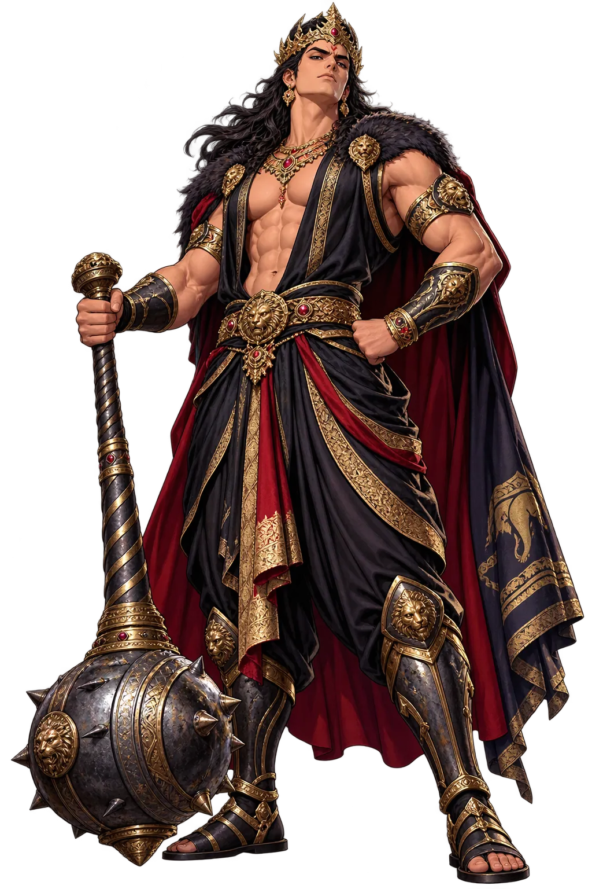
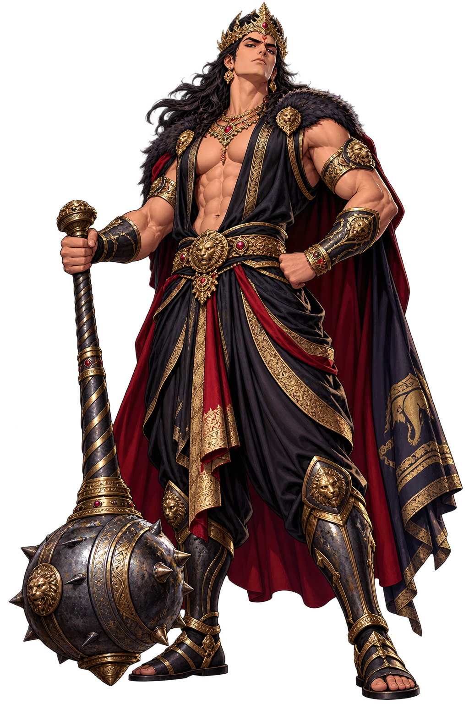

The Living Myth
Ambition, Rivalry, War · Hard to Conquer in Battle · 'Hard to Conquer in Battle'

Stories of Duryodhana
Duryodhana’s mythology is the Mahābhārata read from the losing side: the crown prince displaced by cousins the law favoured, the commander whose every general was better than his cause. The epic gives him the war’s best exit-line and its most human griefs — for Karṇa, for his sons, and for the pride he would not trade for peace.
Gandhārī carried her pregnancy two years; delivered of a hard mass of flesh, she was about to cast it away when Vyāsa ordered it divided — a hundred pieces in oil-jars, and one more that became Duhśalā. Duryodhana’s birth-omen — braying donkeys, circling vultures — had the elders counselling his abandonment; Dhṛtarāṣṭra’s love overruled the omen, and the epic marks the moment the world’s fate turned.
At Śakuni’s loaded board, Duryodhana won the Pāṇḍavas’ kingdom, their liberty, and their queen — and ordered Duḥśāsana to drag Draupadī to the court. Her question — what did you stake first, the kingdom or me? — unmade his legal victory and made his moral one: he returned the stakes and later the kingdom, but the insult outlived the restitution.
Krishna came in peace, then as war-herald; the Pāṇḍavas asked for five villages. ‘I will not give the Pāṇḍavas land equal to the point of a needle’ — Duryodhana’s answer to Krishna’s peace-mission is the epic’s hinge. Every reader who has wished he’d yielded has made the epic’s point: the war was chosen, not fated.
On the war’s final day Duryodhana, alone of the hundred, met Bhīma by the lake of blood. Equal until the last, he fell to the mace-blow Bhīma aimed below the belt — the one illegal stroke of their duel, urged by Krishna. The epic lets the ‘good’ side win by the foul its cause had licensed; Duryodhana’s dying reproach stands unanswered in the text.
The Eldest Kaurava, Rival of the Pāṇḍavas
Duryodhana is the Mahābhārata’s tragic antagonist: the eldest of the hundred Kauravas, peerless mace-fighter, generous friend, and the man whose refusal to yield an inch of the kingdom brought the world to war. The epic refuses to make him a villain simple enough to hate — his claim is legally arguable, his grievance real, and his end the war’s most earned lamentation.
Born of Gandhārī’s split pregnancy as a ball of flesh, divided into a hundred sons by Vyāsa’s grace.
The equal of Bhīma with the gadā; his duel with Bhīma closes the war’s eighteenth day.
The epic’s one unbreakable friendship: the outcast-sūta king he crowned against all caste law.
“Not a needle’s point of land” — the sentence that made the Kurukṣetra war inevitable.
From the original script to the living URL
दुर्योधन
The name in its original Sanskrit form. Duryodhana (दुर्योधन) is attested in the source tradition — “'Hard to Conquer in Battle' (dur- 'hard' + yodhana 'fighting') — the eldest Kaurava, rival of the Pāṇḍavas whose refusal to yield their share of the kingdom brings about the Kurukṣetra war”. Its original diacritics and script distinctions carry the full phonetic and orthographic weight of the source tradition.
duryodhana
The plain duryodhana form is identical to the Unicode restoration. Because this name is already written in Latin letters, no diacritics, stress, or script information were lost — only capitalization differs.
Duryodhana
The Unicode restoration does not need to recover lost marks for Duryodhana. Its value is canonical spelling and consistent cataloguing, not the reconstruction of erased orthography. The domain is readable as-is to both DNS and humanity.
Duryodhana.com
This restoration is written entirely in ASCII letters — no Punycode encoding stands between Duryodhana and the DNS. The domain reads identically to machines and to human eyes.
The attested spelling family of Duryodhana
Duryodhana
Restores दुर्योधन. The full Unicode restoration. duryodhana.com is not in the PuniCodex collection — it is watched for release; if it drops, this temple upgrades to an owned flagship. Attested by Mahabharata, MW.
How Duryodhana was spoken
How Duryodhana travels from ancient script to the modern URL
The lore you have read is the living myth. Extended Lore opens the scholarly vault beneath it: the cult and its material remains, a history of the image, the name after antiquity, a meditation on what the name still means, and the full scholarly apparatus — etymology, orthography, sources.
Enter Extended Lore